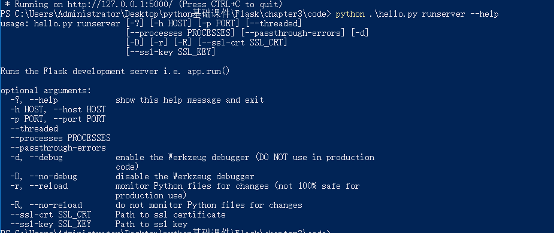

Flask-Script扩展命令行
通过使用Flask-Script扩展，我们可以在Flask服务器启动的时候，通过命令行的方式传入参数。跟django中的runserver类似，可以在命令行下制定运行服务器额参数
需要先安装 flask-script 扩展模块
pip install flask-script
使用flask-script扩展
from flask import Flask
from flask_script import Manager
app = Flask(__name__) # type:Flask
manager = Manager(app)
@app.route('/')
def index():
return 'hello world'
if __name__ == '__main__':
# app.run()
manager.run()
可以使用下面命令查看可选参数
python .\hello.py runserver --help
